2023 National 5 Physics - Section 1 questions
Source: Scottish Qualifications Authority (SQA) / Qualifications Scotland. This is a StemInteract HTML companion, not an official HTML edition. Selectable text is supplied alongside original page images. Use the images or original PDF for equations, powers, fractions, vector notation, tables and diagrams; text extraction cannot fully preserve mathematical layout.
Jump to a question
PDF page 1
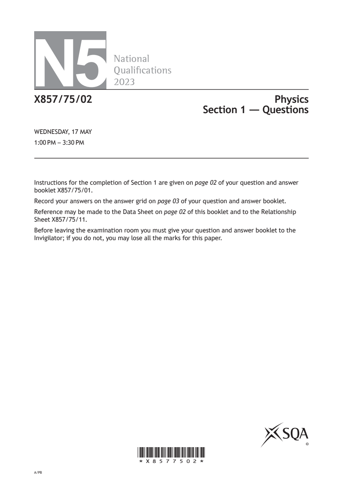
Selectable page text
N5
National
Qualications
2023
X857/75/02 Physics
Section 1 — Questions
WEDNESDAY, 17 MAY
1:00 PM – 3:30 PM
Instructions for the completion of Section 1 are given on page 02 of your question and answer
booklet X857/75/01.
Record your answers on the answer grid on page 03 of your question and answer booklet.
Reference may be made to the Data Sheet on page 02 of this booklet and to the Relationship
Sheet X857/75/11.
Before leaving the examination room you must give your question and answer booklet to the
Invigilator; if you do not, you may lose all the marks for this paper.
©
*X8577502*
A/PBPDF page 2
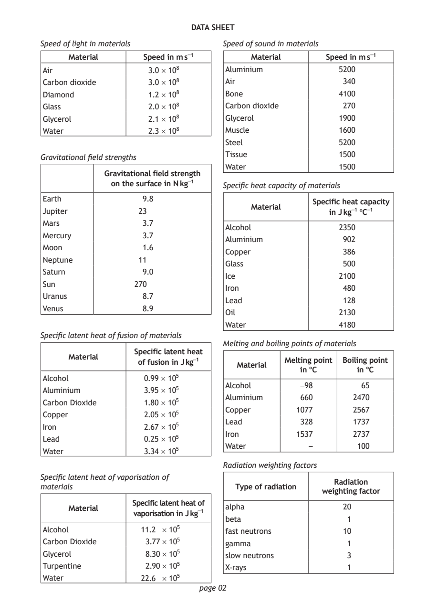
Selectable page text
DATA SHEET
Speed of light in materials Speed of sound in materials
Material Speed in m s⁻¹ Material Speed in m s⁻¹
Air 3.0 × 10⁸ Aluminium 5200
Carbon dioxide 3.0 × 10⁸ Air 340
Diamond 1.2 × 10⁸ Bone 4100
Glass 2.0 × 10⁸ Carbon dioxide 270
Glycerol 2.1 × 10⁸ Glycerol 1900
Water 2.3 × 10⁸ Muscle 1600
Steel 5200
Tissue 1500
Gravitational field strengths
Water 1500
Gravitational field strength
on the surface in N kg⁻¹ Specific heat capacity of materials
Earth 9.8
Specific heat capacity
Material
Jupiter 23 in J kg⁻¹ °C⁻¹
Mars 3.7
Alcohol 2350
Mercury 3.7
Aluminium 902
Moon 1.6
Copper 386
Neptune 11
Glass 500
Saturn 9.0
Ice 2100
Sun 270
Iron 480
Uranus 8.7
Lead 128
Venus 8.9
Oil 2130
Water 4180
Specific latent heat of fusion of materials
Melting and boiling points of materials
Specific latent heat
Material
of fusion in J kg⁻¹ Melting point Boiling point
Material
in °C in °C
Alcohol 0.99 × 10⁵
Alcohol −98 65
Aluminium 3.95 × 10⁵
Aluminium 660 2470
Carbon Dioxide 1.80 × 10⁵
Copper 1077 2567
Copper 2.05 × 10⁵
Lead 328 1737
Iron 2.67 × 10⁵
Iron 1537 2737
Lead 0.25 × 10⁵
Water – 100
Water 3.34 × 10⁵
Radiation weighting factors
Specific latent heat of vaporisation of
Radiation
materials Type of radiation
weighting factor
Specific latent heat of
Material alpha 20
vaporisation in J kg⁻¹
beta 1
Alcohol 11.2 × 10⁵ fast neutrons 10
Carbon Dioxide 3.77 × 10⁵ gamma 1
Glycerol 8.30 × 10⁵ slow neutrons 3
Turpentine 2.90 × 10⁵ X-rays 1
Water 22.6 × 10⁵
page 02PDF page 3
Section 1, Question 1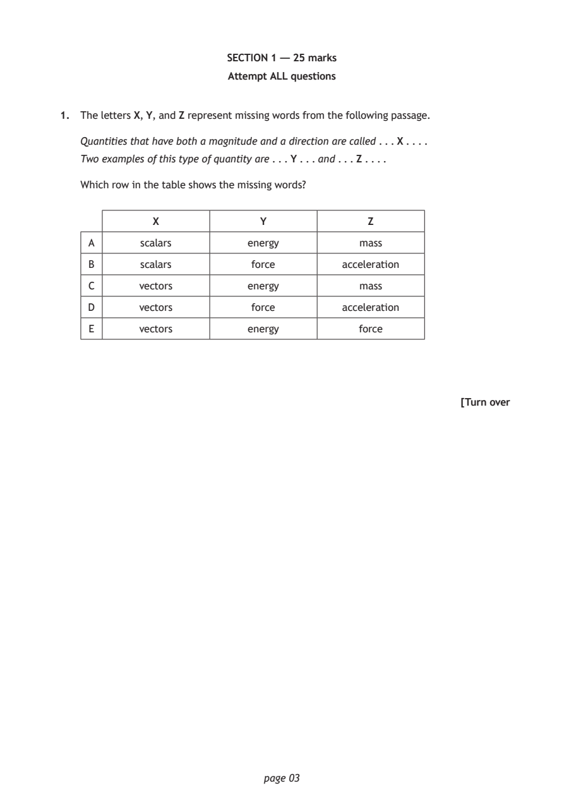
Selectable page text
SECTION 1 — 25 marks
Attempt ALL questions
1. The letters X, Y, and Z represent missing words from the following passage.
Quantities that have both a magnitude and a direction are called . . . X . . . .
Two examples of this type of quantity are . . . Y . . . and . . . Z . . . .
Which row in the table shows the missing words?
X Y Z
A scalars energy mass
B scalars force acceleration
C vectors energy mass
D vectors force acceleration
E vectors energy force
[Turn over
page 03PDF page 4
Section 1, Question 2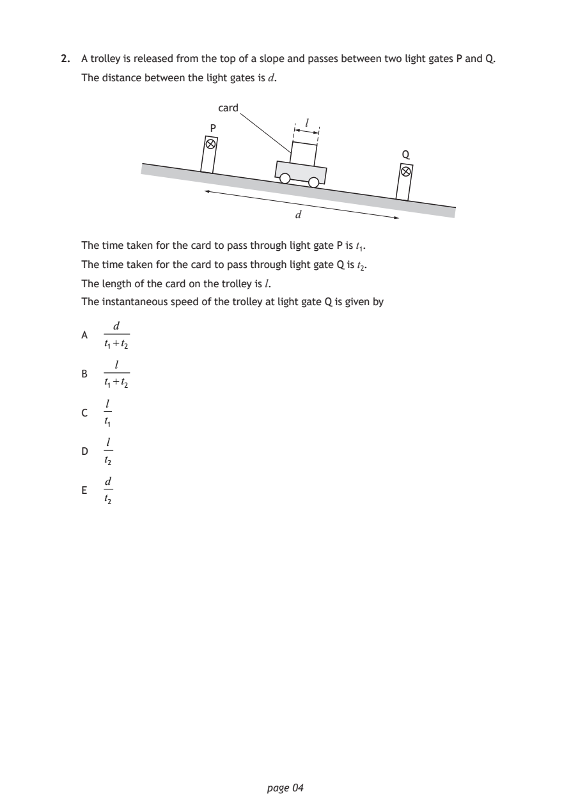
Selectable page text
2. A trolley is released from the top of a slope and passes between two light gates P and Q.
The distance between the light gates is d.
card
l
P
Q
d
The time taken for the card to pass through light gate P is t₁.
The time taken for the card to pass through light gate Q is t₂.
The length of the card on the trolley is l.
The instantaneous speed of the trolley at light gate Q is given by
d
A
t₁+t₂
l
B
t₁+t₂
l
C
t₁
l
D
t₂
d
E
t₂
page 04PDF page 5
Section 1, Question 3Section 1, Question 4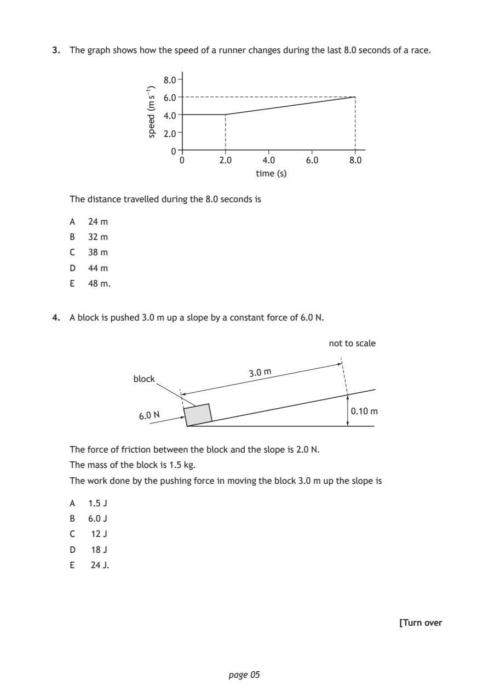
Selectable page text
3. The graph shows how the speed of a runner changes during the last 8.0 seconds of a race.
page 05
)1−s
m(
deeps
8.0
6.0
4.0
2.0
0
0 2.0 4.0 6.0 8.0
time (s)
The distance travelled during the 8.0 seconds is
A 24 m
B 32 m
C 38 m
D 44 m
E 48 m.
4. A block is pushed 3.0 m up a slope by a constant force of 6.0 N.
not to scale
3.0 m
block
0.10 m
6.0 N
The force of friction between the block and the slope is 2.0 N.
The mass of the block is 1.5 kg.
The work done by the pushing force in moving the block 3.0 m up the slope is
A 1.5 J
B 6.0 J
C 12 J
D 18 J
E 24 J.
[Turn overPDF page 6
Section 1, Question 5Section 1, Question 6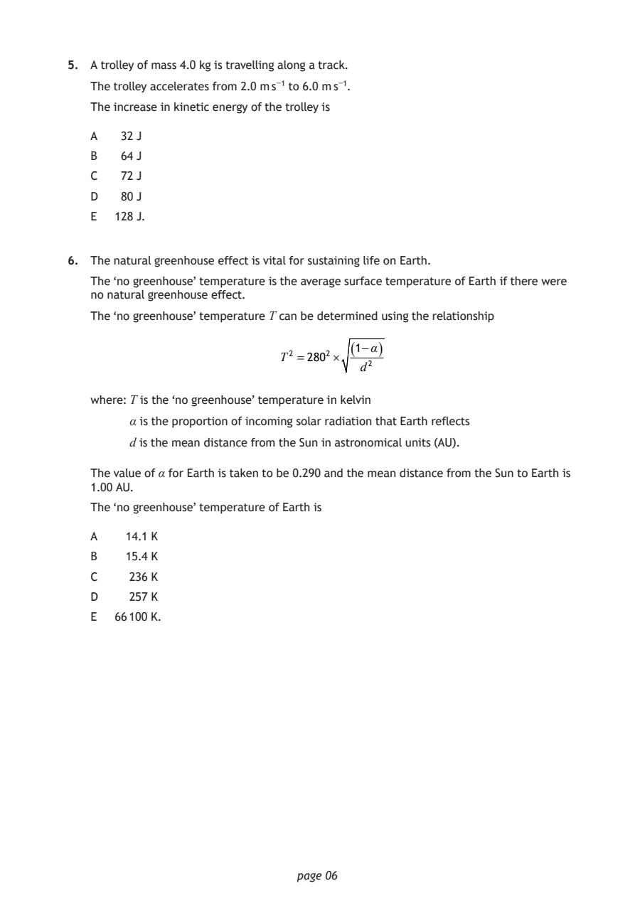
Selectable page text
5. A trolley of mass 4.0 kg is travelling along a track.
The trolley accelerates from 2.0 m s⁻¹ to 6.0 m s⁻¹.
The increase in kinetic energy of the trolley is
A 32 J
B 64 J
C 72 J
D 80 J
E 128 J.
6. The natural greenhouse effect is vital for sustaining life on Earth.
The ‘no greenhouse’ temperature is the average surface temperature of Earth if there were
no natural greenhouse effect.
The ‘no greenhouse’ temperature T can be determined using the relationship
( 1−α )
T² =280²×
d²
where: T is the ‘no greenhouse’ temperature in kelvin
α is the proportion of incoming solar radiation that Earth reflects
d is the mean distance from the Sun in astronomical units (AU).
The value of α for Earth is taken to be 0.290 and the mean distance from the Sun to Earth is
1.00 AU.
The ‘no greenhouse’ temperature of Earth is
A 14.1 K
B 15.4 K
C 236 K
D 257 K
E 66 100 K.
page 06PDF page 7
Section 1, Question 7Section 1, Question 8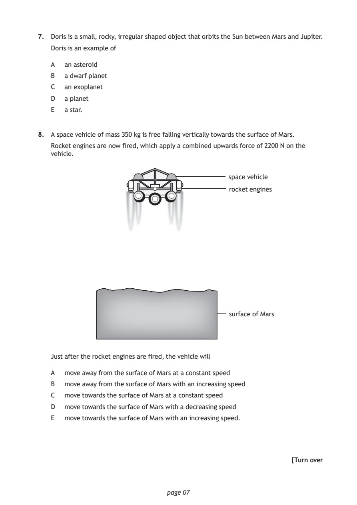
Selectable page text
7. Doris is a small, rocky, irregular shaped object that orbits the Sun between Mars and Jupiter.
Doris is an example of
A an asteroid
B a dwarf planet
C an exoplanet
D a planet
E a star.
8. A space vehicle of mass 350 kg is free falling vertically towards the surface of Mars.
Rocket engines are now fired, which apply a combined upwards force of 2200 N on the
vehicle.
space vehicle
rocket engines
surface of Mars
Just after the rocket engines are fired, the vehicle will
A move away from the surface of Mars at a constant speed
B move away from the surface of Mars with an increasing speed
C move towards the surface of Mars at a constant speed
D move towards the surface of Mars with a decreasing speed
E move towards the surface of Mars with an increasing speed.
[Turn over
page 07PDF page 8
Section 1, Question 9Section 1, Question 10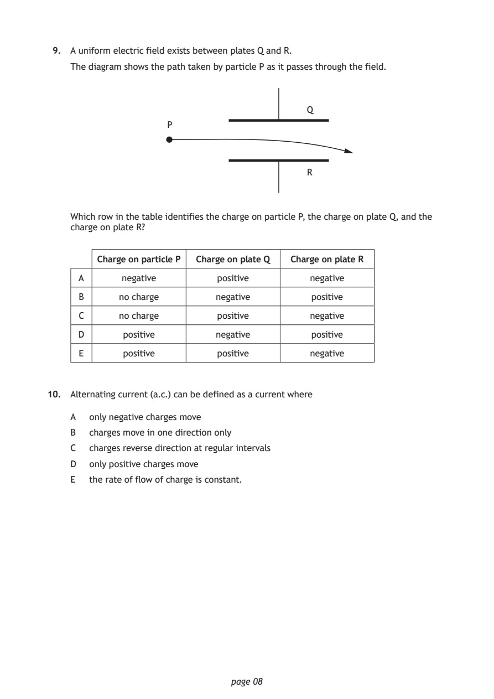
Selectable page text
9. A uniform electric field exists between plates Q and R.
The diagram shows the path taken by particle P as it passes through the field.
Q
P
R
Which row in the table identifies the charge on particle P, the charge on plate Q, and the
charge on plate R?
Charge on particle P Charge on plate Q Charge on plate R
A negative positive negative
B no charge negative positive
C no charge positive negative
D positive negative positive
E positive positive negative
10. Alternating current (a.c.) can be defined as a current where
A only negative charges move
B charges move in one direction only
C charges reverse direction at regular intervals
D only positive charges move
E the rate of flow of charge is constant.
page 08PDF page 9
Section 1, Question 11Section 1, Question 12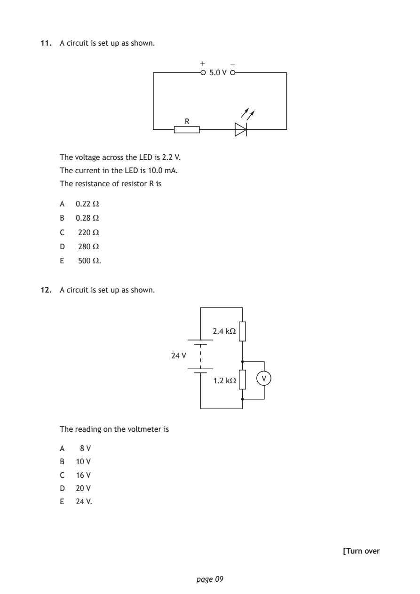
Selectable page text
11. A circuit is set up as shown.
+ −
5.0 V
R
The voltage across the LED is 2.2 V.
The current in the LED is 10.0 mA.
The resistance of resistor R is
A 0.22 Ω
B 0.28 Ω
C 220 Ω
D 280 Ω
E 500 Ω.
12. A circuit is set up as shown.
2.4 kΩ
24 V
1.2 kΩ V
The reading on the voltmeter is
A 8 V
B 10 V
C 16 V
D 20 V
E 24 V.
[Turn over
page 09PDF page 10
Section 1, Question 13Section 1, Question 14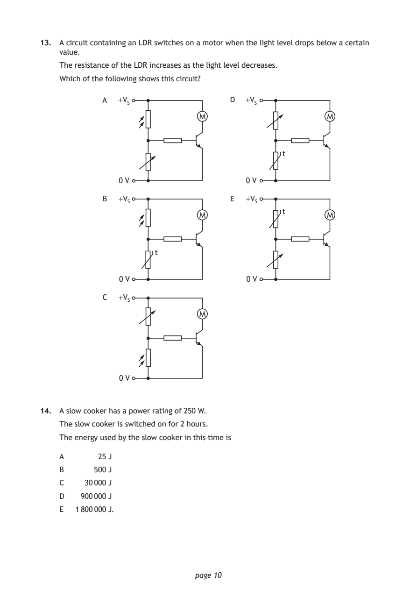
Selectable page text
13. A circuit containing an LDR switches on a motor when the light level drops below a certain
value.
The resistance of the LDR increases as the light level decreases.
Which of the following shows this circuit?
A +V_{S} D +V_{S}
M M
t
0 V 0 V
B +V_{S} E +V_{S}
t
M M
t
0 V 0 V
C +V_{S}
M
0 V
14. A slow cooker has a power rating of 250 W.
The slow cooker is switched on for 2 hours.
The energy used by the slow cooker in this time is
A 25 J
B 500 J
C 30 000 J
D 900 000 J
E 1 800 000 J.
page 10PDF page 11
Section 1, Question 15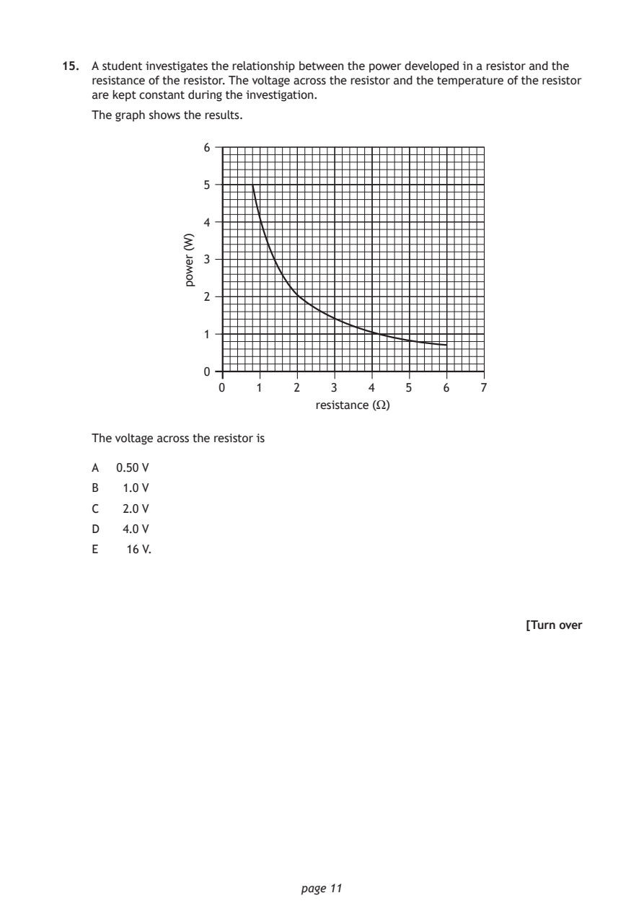
Selectable page text
15. A student investigates the relationship between the power developed in a resistor and the
resistance of the resistor. The voltage across the resistor and the temperature of the resistor
are kept constant during the investigation.
The graph shows the results.
page 11
)W(
rewop
6
5
4
3
2
1
0
0 1 2 3 4 5 6 7
resistance (Ω)
The voltage across the resistor is
A 0.50 V
B 1.0 V
C 2.0 V
D 4.0 V
E 16 V.
[Turn overPDF page 12
Section 1, Question 16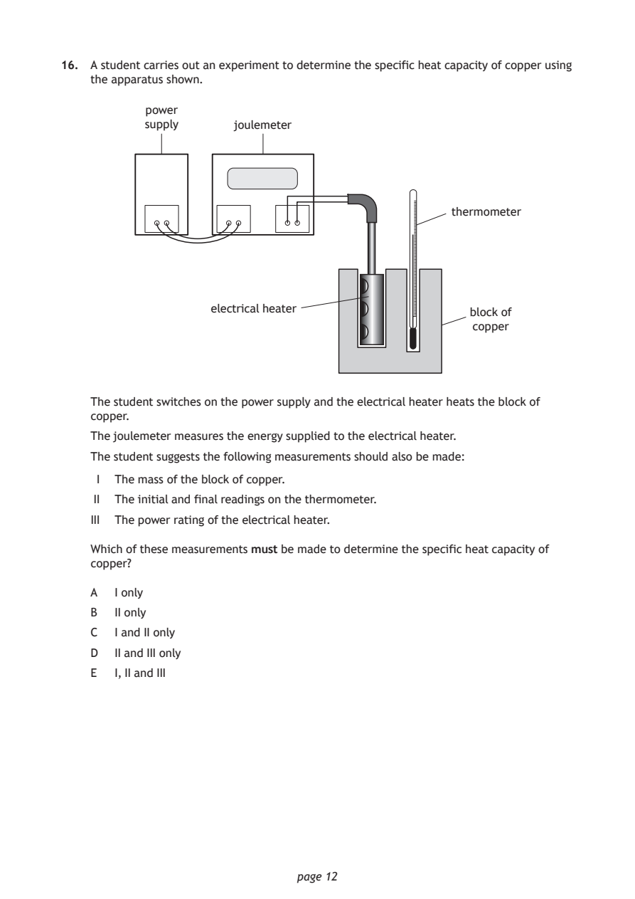
Selectable page text
16. A student carries out an experiment to determine the specific heat capacity of copper using
the apparatus shown.
power
supply joulemeter
thermometer
electrical heater
block of
copper
The student switches on the power supply and the electrical heater heats the block of
copper.
The joulemeter measures the energy supplied to the electrical heater.
The student suggests the following measurements should also be made:
I The mass of the block of copper.
II The initial and final readings on the thermometer.
III The power rating of the electrical heater.
Which of these measurements must be made to determine the specific heat capacity of
copper?
A I only
B II only
C I and II only
D II and III only
E I, II and III
page 12PDF page 13
Section 1, Question 17Section 1, Question 18Section 1, Question 19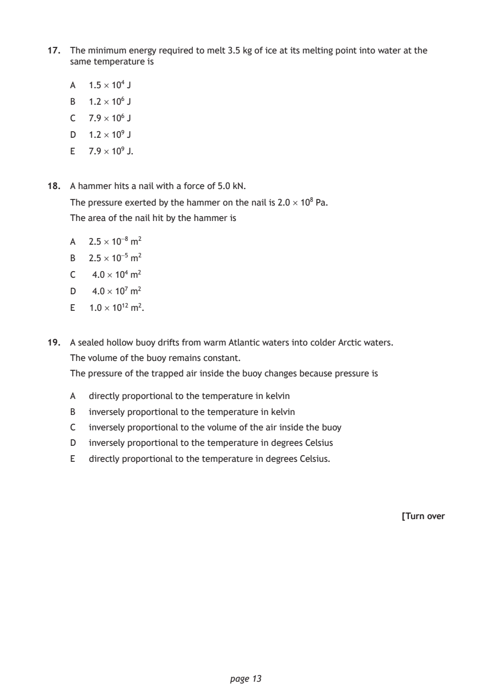
Selectable page text
17. The minimum energy required to melt 3.5 kg of ice at its melting point into water at the
same temperature is
A 1.5 × 10⁴ J
B 1.2 × 10⁶ J
C 7.9 × 10⁶ J
D 1.2 × 10⁹ J
E 7.9 × 10⁹ J.
18. A hammer hits a nail with a force of 5.0 kN.
The pressure exerted by the hammer on the nail is 2.0 × 10⁸ Pa.
The area of the nail hit by the hammer is
A 2.5 × 10⁻⁸ m²
B 2.5 × 10⁻⁵ m²
C 4.0 × 10⁴ m²
D 4.0 × 10⁷ m²
E 1.0 × 10¹² m².
19. A sealed hollow buoy drifts from warm Atlantic waters into colder Arctic waters.
The volume of the buoy remains constant.
The pressure of the trapped air inside the buoy changes because pressure is
A directly proportional to the temperature in kelvin
B inversely proportional to the temperature in kelvin
C inversely proportional to the volume of the air inside the buoy
D inversely proportional to the temperature in degrees Celsius
E directly proportional to the temperature in degrees Celsius.
[Turn over
page 13PDF page 14
Section 1, Question 20Section 1, Question 21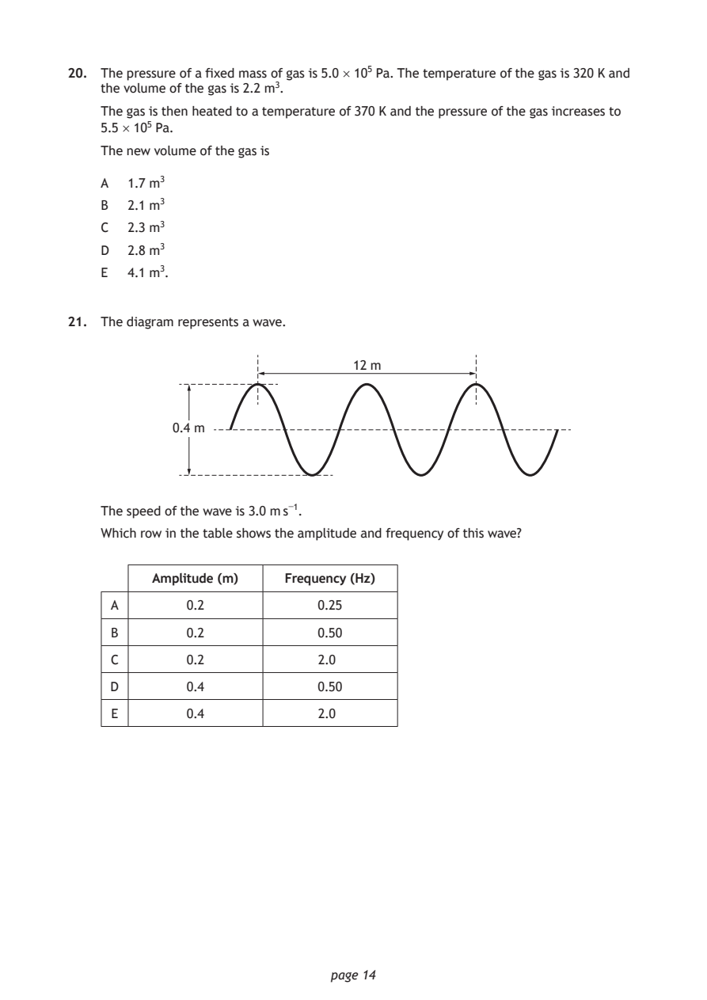
Selectable page text
20. The pressure of a fixed mass of gas is 5.0 × 10⁵ Pa. The temperature of the gas is 320 K and
the volume of the gas is 2.2 m³.
The gas is then heated to a temperature of 370 K and the pressure of the gas increases to
5.5 × 10⁵ Pa.
The new volume of the gas is
A 1.7 m³
B 2.1 m³
C 2.3 m³
D 2.8 m³
E 4.1 m³.
21. The diagram represents a wave.
12 m
0.4 m
The speed of the wave is 3.0 m s⁻¹.
Which row in the table shows the amplitude and frequency of this wave?
Amplitude (m) Frequency (Hz)
A 0.2 0.25
B 0.2 0.50
C 0.2 2.0
D 0.4 0.50
E 0.4 2.0
page 14PDF page 15
Section 1, Question 22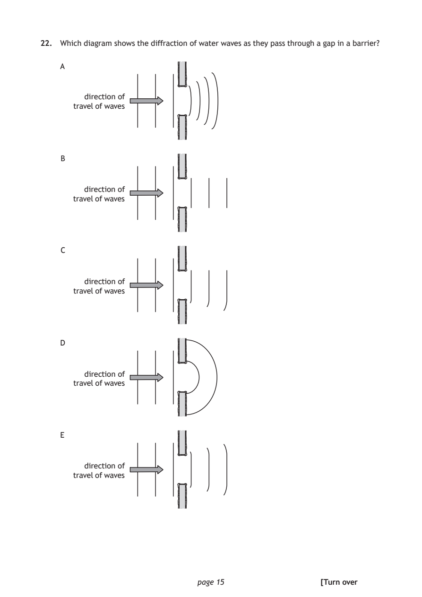
Selectable page text
22. Which diagram shows the diffraction of water waves as they pass through a gap in a barrier?
A
direction of
travel of waves
B
direction of
travel of waves
C
direction of
travel of waves
D
direction of
travel of waves
E
direction of
travel of waves
page 15 [Turn overPDF page 16
Section 1, Question 23Section 1, Question 24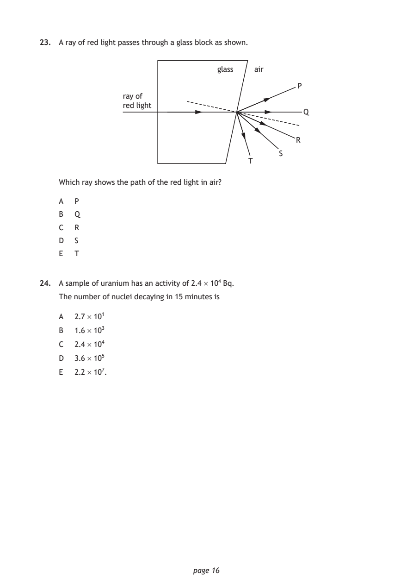
Selectable page text
23. A ray of red light passes through a glass block as shown.
glass air
P
ray of
red light
Q
R
S
T
Which ray shows the path of the red light in air?
A P
B Q
C R
D S
E T
24. A sample of uranium has an activity of 2.4 × 10⁴ Bq.
The number of nuclei decaying in 15 minutes is
A 2.7 × 10¹
B 1.6 × 10³
C 2.4 × 10⁴
D 3.6 × 10⁵
E 2.2 × 10⁷.
page 16PDF page 17
Section 1, Question 25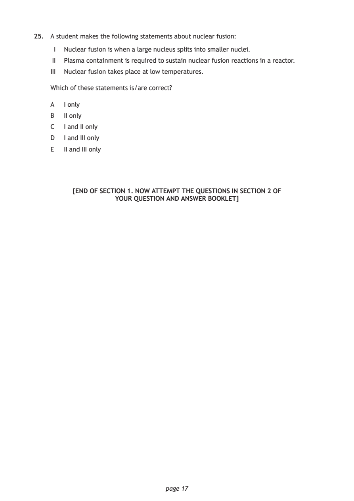
Selectable page text
25. A student makes the following statements about nuclear fusion:
I Nuclear fusion is when a large nucleus splits into smaller nuclei.
II Plasma containment is required to sustain nuclear fusion reactions in a reactor.
III Nuclear fusion takes place at low temperatures.
Which of these statements is/are correct?
A I only
B II only
C I and II only
D I and III only
E II and III only
[END OF SECTION 1. NOW ATTEMPT THE QUESTIONS IN SECTION 2 OF
YOUR QUESTION AND ANSWER BOOKLET]
page 17PDF page 18

Selectable page text
SPACE FOR ROUGH WORK
page 18PDF page 19

Selectable page text
SPACE FOR ROUGH WORK
page 19PDF page 20

Selectable page text
[BLANK PAGE]
DO NOT WRITE ON THIS PAGE
page 20